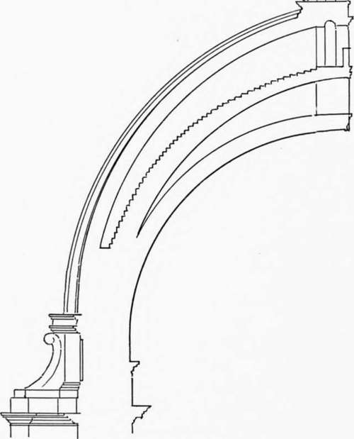

The Dome Of St. Peter's. Part 3
Description
This section is from the book "Character Of Renaissance Architecture", by Charles Herbert Moore. Also available from Amazon: Character of Renaissance Architecture.
The Dome Of St. Peter's. Part 3
As for Bramante's intended architectural treatment of the rest of the building we have, as before remarked, no precise information. It appears, however, most probable that he meant to cover the arms of the cross with barrel vaulting on massive square piers and arches, with a single order of pilasters such as Alberti had used in St. Andrea at Mantua, and such as Michael Angelo actually employed, though in a way peculiar to himself, and probably unlike that in which Bramante would have done it. For Bramante would, I think, have followed Alberti's example in raising the order on pedestals — the great scale of St. Peter's especially calling for such treatment. Bramante would have realized that a single order large enough to rest directly on the pavement and allow the entablature to pass over the crowns of the arches of the great arcades, would dwarf the apparent scale of the whole interior, as Michael Angelo's order actually does. But whatever his intention was as to these details, Bramante died before they could be carried out, and we are left in the dark as to what the church as a whole would have been had he lived to complete it.
To the work of his numerous successors prior to the appointment of Michael Angelo, we need give no attention because their labours did not materially affect the final result. Their work was largely on paper only, and the building as it now exists is substantially Michael Angelo's design, based on that of Bramante, but with extensive, and damaging, additions by subsequent architects.
Michael Angelo at the time of his appointment as architect, in the year 1546, was seventy-two years of age. He professed great respect for the original scheme of Bramante, yet he radically changed the form and adjustment of its main feature, the dome. In conformity with Bramante's project, he made the drum massive at the base and thinner above, but in place of Bramante's external colonnade surmounted by a solid ring of masonry, forming a continuous abutment at the springing of the vault, he substituted a series of sixteen isolated buttresses, and raised the dome so high above them that they do not meet its thrusts at all. The drum is carried up above the buttresses so as to form
Brunelleschi's double vault, and was to include (as the model, Fig. 26, shows) three separate shells.1 The inner shell was to be hemispherical (Michael Angelo thus showing that he appreciated the superior character of the dome of the Pantheon and an attic over the order with which the buttresses are ornamented, and from the top of this attic the dome is sprung. The stepped circles of abutting masonry at the haunch are omitted, and instead of one solid vault shell, such as Bramante intended, Michael Angelo's project provided for a variation of that of Bramante's scheme to the dome of Brunelleschi as to internal effect), while the other two were to be pointed, with diverging surfaces. Following Brunelleschi, he introduced a system of enormous ribs rising over the buttresses of the drum, and converging on the opening at the crown of the vault. These ribs unite the outermost two shells, extending through the thickness of both, and support the lantern.
Fig. 26.— The model.
1 Michael Angelo's model, on a large scale and finished in every detail, is preserved in an apartment of St. Peter's.
Of this hazardous scheme only the drum was completed when Michael Angelo died. But the existing dome, which was carried out by his immediate successors, is substantially his design, though the innermost shell of the model was omitted in execution, and the vault was thus made double instead of threefold (Fig. 30). This dome does not, however, divide into two shells from near the springing, but is carried up in one solid mass almost to the level of the haunch. Michael Angelo may have thought that this would strengthen it, but the solid part has not a form capable of much resistance to thrust, and the isolated buttresses are located so far below the springing that they contribute practically nothing to the strength of the system, as already remarked, and as we shall presently see.
Although this great dome has been almost universally lauded, it is entirely indefensible from the point of view of sound principles of construction. The work shows that Michael Angelo was not imbued, as Bramante had been, with a sense of the essential conditions of stability in dome building as exemplified in the works of Roman antiquity. He had conceived an ardent admiration for the dome of Florence, and in emulation of it he changed the external outline from the hemispherical to the pointed form, and, lifting it out of the buttressing drum, set it on the top.1
Continue to: